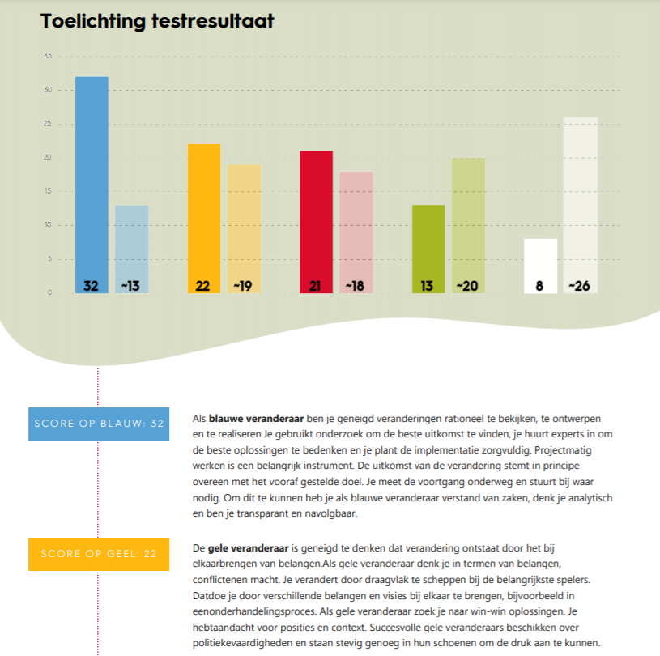
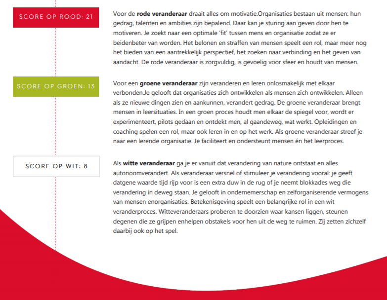

Kleurtjestheorie van Caluwé en Vermaak
Ik heb de kleurentest gedaan, welke mijn visie geeft op veranderen. Mijn resultaten die uit de test zijn gekomen, ziet u hieronder.
 
Zoals te zien is, springt blauw er bij mij erg bovenuit. Dit wil zeggen dat ik geneigd ben om veranderingen rationeel te bekijken, te ontwerpen en te realiseren. Volgens de test ben ik analytisch, transparant en navolgbaar. Ik kan mezelf wel vinden in deze uitslag. Ik denk vaak over dingen na voordat ik een keuze maak en probeer open te zijn naar anderen. Ondanks dat ik me erin kan vinden, had ik niet verwacht dat de score zo hoog zou zijn vergeleken met de andere kleuren. De kleur blauw wordt gevolgd door geel, met kort daarop rood. Als ik de beschrijving lees, denk ik dat ik meer rood ben dan geel. Dit omdat ik zelf erg van gezelligheid en een goede sfeer houd. Ik vind het belangrijk dat mensen goed samen gaan en dat er geen of weinig spanningen zijn. Dat ik erg laag scoor op groen en wit had ik van tevoren wel gedacht. Vooral dat ik het laagst scoor op wit, omdat ik zelf helemaal niet filosofisch ben aangelegd en daar ook vrij weinig mee heb.
Ook heb ik gevraagd aan mijn projectgenoten welke kleur zij dachten dat ik zou hebben. Eigenlijk meteen zeiden ze dat ze dachten dat ik de kleur blauw had. Dit was natuurlijk goed, dus ik heb blijkbaar tijdens het project verschillende blauwe kenmerken naar voren laten komen. Het resultaat van de test past dus wel bij hoe ik overkom. Tevens had ik zelf ook wel verwacht dat ik blauw zou zijn, aangezien ik ook de kleur blauw had in de DISC test, welke voor Consciëntieus staat.
De projectorganisatie, SMARTTY, heeft naar mijn mening een .... kleur.
Ga terug naar 'Smart Business' Ga terug naar vorige pagina Ga naar volgende pagina